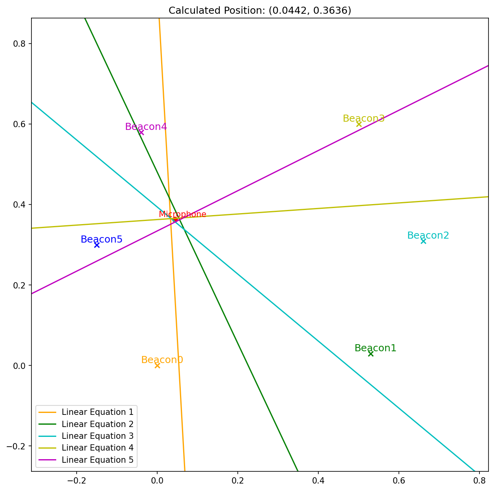

GPS, Rebuilt
with Sound.
Six speakers loop unique Gold codes and one microphone records the mix. Cross-correlation separates the speakers, arrival-time differences become a linear system, and least squares solves for the microphone position, landing within 0.4 cm on a real recording.
Headline0.4 cm error on a real recording · worst simulated error 1.2 cm · one microphone, six speakers, no shared clock
- Course
- EE 66, Signals, Dynamics & Information
- Lab
- Lab 2: Acoustic Positioning System
- Timeline
- Week 6, Fall 2026
- Topics
- Cross-correlation, TDOA, least squares
Overview
GPS, rebuilt with sound. Six speakers around a lab table each loop their own coded beacon signal, and a single microphone records all of them mixed together. From that one recording, the system works out where the microphone is in 2D. It does this using only the differences in when each speaker's signal arrives, with no shared clock between the speakers and the microphone.
Approach
- Separate the speakers. Each speaker plays a Gold code, a pseudorandom binary sequence that correlates strongly with itself at zero shift and weakly with everything else. Cross-correlating the recording with each stored code (periodically, since the codes loop) gives one sharp peak per speaker, and the peak's position is that signal's arrival time.
- Average out the noise. The codes repeat every 230 ms and the recording runs about 2.5 s, giving roughly ten periods. Averaging the correlation across periods keeps the peaks and suppresses the noise.
- Peaks to time differences. Measure every peak relative to beacon 0 and divide by the 44.1 kHz sampling rate to get the time difference of arrival (TDOA) for each speaker.
- Make it linear. The range equations are quadratic in position, and the true start time τ0 is unknown. Subtracting beacon 0's equation from the others cancels the quadratic term. Treating τ0 as a third unknown alongside rx and ry then leaves five linear equations in three unknowns.
- Solve with least squares. With more equations than unknowns and noisy measurements, the system is inconsistent, so it's solved in the least-squares sense.
A x = b → x̂ = (ATA)−1ATb, x = [rx, ry, τ0]T
Results
| Test | Trials | Result |
|---|---|---|
| Simulated noisy signals, 5 m × 5 m layout, target (1.20, 3.60) m, three noise levels | 9 | Worst error 1.2 cm |
| Real recording, microphone at the table's center (25, 30) cm | 1 | Estimated (25.0, 30.4) cm · 0.4 cm off |
| Lab test recording | 1 | Estimated (4.4, 36.4) cm (see figure) |

What I learned
- Correlation is a detector. Because Gold codes barely correlate with each other, one microphone can pull six overlapping signals apart just by correlating against each known code.
- Repetition beats noise. Recording many periods of a looping signal and averaging them is a cheap, reliable way to get clean peaks out of a noisy room.
- An unknown clock can just be another variable. Instead of synchronizing the microphone with the speakers, the start time becomes a third unknown in the linear system. That's the same trick real GPS receivers use.
- The sampling rate sets the resolution. At 44.1 kHz, one sample is about 7.7 mm of sound travel, so centimeter-level accuracy is close to what this setup can do.